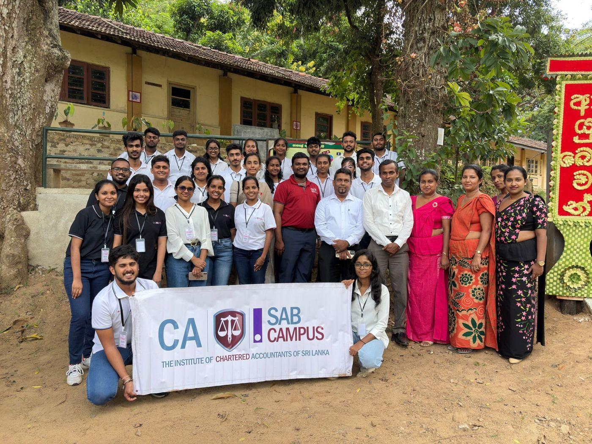
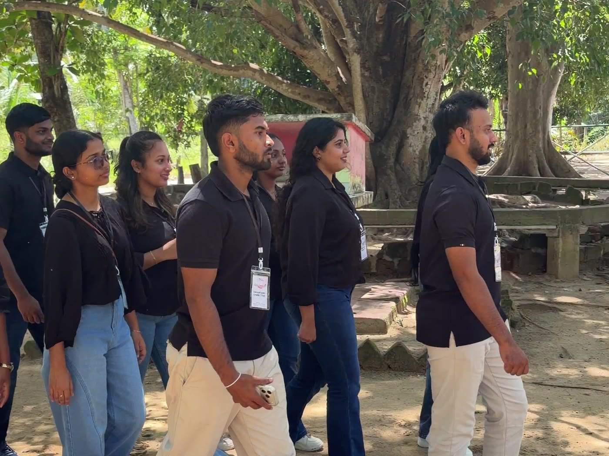
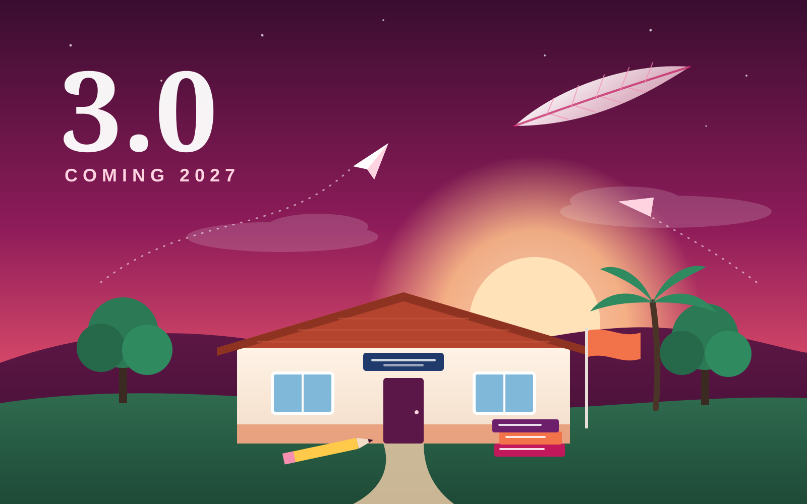

A CSR initiative · SAB Campus of CA Sri Lanka
Sihina Piyapath
Giving wings to little dreams.
Each year, Sihina Piyapath (සිහින පියාපත්, "wings of dreams") takes books, stationery and everyday essentials to the children of a rural primary school in Sri Lanka, with the help of lecturers, students, families and local businesses.

- 2projects completed
- 71children supported
- 2rural primary schools
- 2025giving every year since
Our journey
One school, one year at a time.
Each new batch carries the project forward to a new school.
-

-

-

Project 02 · 4 November 2026 · Padiyathalawa
Sihina Piyapath 2.0
Thank you for giving wings to little dreams.
On 4 November 2026 we delivered books, stationery, story books, uniform fabric and grocery packs to every student at AM/Maha/Wahawa Primary School in Padiyathalawa. Every item came from the generosity of our lecturers, fellow batches, families and supporters. From the 03A Weekday Batch, and from the children, teachers and parents of Wahawa: thank you.
- School
- AM/Maha/Wahawa Primary School
- Location
- Dorakumbura, Padiyathalawa
- Students
- 26 · Grades 1–5
- Delivered
- Books, stationery, story books, uniforms & groceries
Sihina Piyapath 2.0
Gallery
From packing night at campus to the morning at Wahawa Primary School. Tap any photo to enlarge.
Project 01 · 6 November 2025 · Theldeniya
Sihina Piyapath 1.0
On 6 November 2025, our batch took books, stationery and uniform fabric to CP/Theldeniya Mahadoraliyadda Primary School in Theldeniya. Batch-mates, lecturers, other batches and well-wishers made it happen.
- 45students supported
- LKR 222,100raised through sponsorships
- 440+exercise books donated by supporters
- 30+individual and batch sponsors
Coming next · 2027
Sihina Piyapath 3.0
The next batch will carry the wings forward to a new school. Know a primary school that needs support? Tell us about it. Suggestions from teachers, parents, past pupils and the community help us find the children who need it most.
Suggest a schoolHow a school is chosen
- 1SuggestSend us the school's details using the form below. It takes about two minutes.
- 2ReviewThe 3.0 team and the Department of Business Analytics review every suggestion.
- 3Visit & confirmWe speak to the principal and visit the shortlisted schools to understand their needs.
- 4AnnounceThe chosen school is announced here, along with its list of needs.
- A small primary school (Grades 1–5) in a rural or remote area
- Families who find it hard to afford books, stationery and uniforms
- Little or no support from other donors or programmes
- Reachable from Colombo for a one-day visit
The people behind 2.0
Our team
03A Weekday Batch · Department of Business Analytics · SAB Campus of CA Sri Lanka
Project Coordinators
- Pramod Perera
- Chamitha Ranadilina
- Venuja Senanayake
Project Treasurers
- Dilshan Kithulgodage
- Sasani Umayangana
Documentation & Media
- Nadee Perera
- Upani Samandini
- Buddika Gunathilake
Support Team
- Anuhas Nathsara
- Charith Wimukthi
- Arosha Weerawardhana
- Nethma Dissanayake
- Dananjan Tharaka
- Waruni Pabasara
- Nishadi Rathnayake
- Sanuthi Nihinsa
- Pipuni Movindi
- Jivana Jeewaraj
With the guidance of Ms. Isuri Samarawickrama, Head of the Department of Business Analytics.